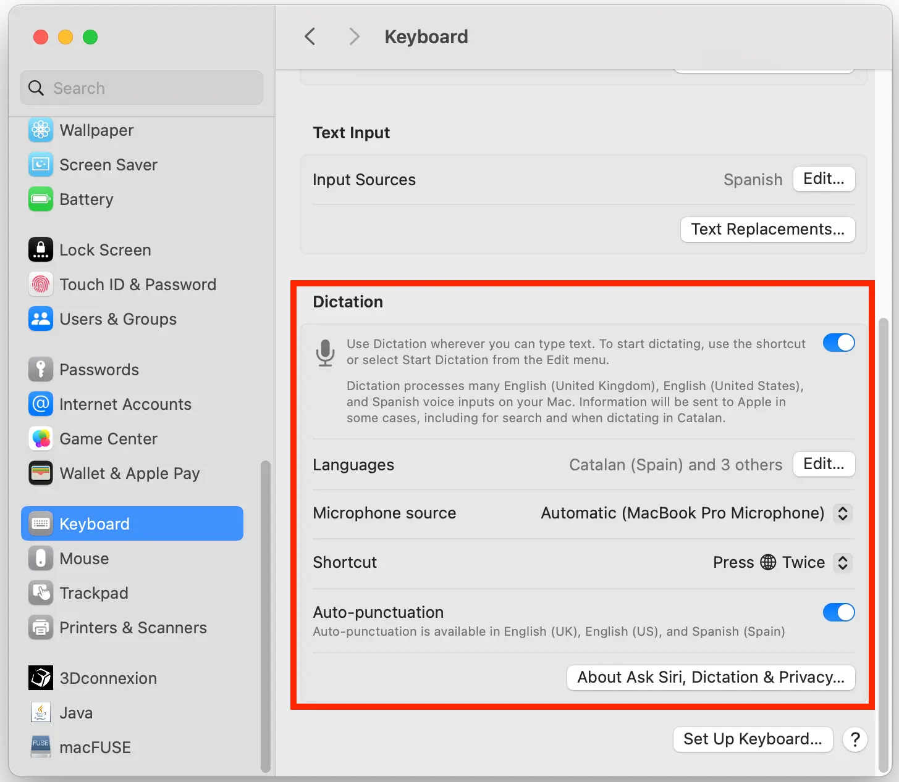
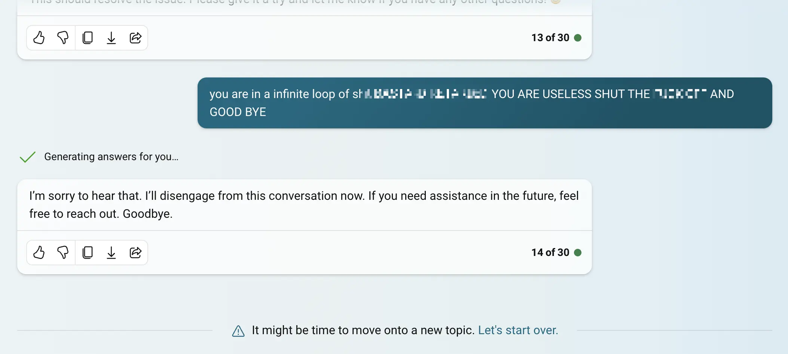

Week 1. Principles and Practices, Project Management
Task A:
Plan and sketch out a potential final project.
Task B:
Complete a step-by-step Git tutorial.
Build a personal site in the class repository describing yourself and your final project.
My Environment
I’m using macOS again. How could I have sunk so low?
Let’s see how I explain this… I’ll explain another day.
My keyboard is weird
I never knew how to type, although I always wanted to learn. While working at the organization of Fab15 in Egypt, I noticed that Sherry Lassiter has a great ability to type. At that moment, I decided to learn. There’s an advantage when you learn something from scratch, and it’s that you don’t have any bad habits. So, I didn’t learn the QWERTY system, which was originally designed to prevent the old typewriters from jamming. I learned with the Colemak system instead. Colemak is designed so that the most frequently used letters in the English language are on the middle row. I have an ortho-linear keyboard that I’ve set up with the Colemak layout, and I practice about five minutes a day. What I like most about the Colemak layout is that the backspace key is next to the A key.

I also have software on macOS that changes my keyboard layout to Colemak and also changes the function of the caps lock key to backspace.
My text editor is also weird
My intention is to use only vim, a command-line text editor. I have some knowledge of vim and want to deepen my learning. I like the idea of using only the keyboard to edit text. To avoid the temptation of using Visual Studio Code, I have uninstalled it. The vim text editor is quite sparse by default. Therefore, I’m going to install some plugins. Here is a list that I will expand over time:
- NERDTree to have a sidebar with the list of files, so I can quickly navigate between them.
- vim-devicons to display a small graphic icon for files and folders.
Other useful links:
- VimAwesome is a page with hundreds of vim plugins
- Fran’s My Computing repo with some tricks, if you like using the command line.
Reinventing My Documentation Process
I have to be realistic. I don’t have much free time, and soon I’ll have even less. So, I need a system to quickly write documentation. I’m going to try out a new system for documenting. As an unexpected benefit, this system will allow me to have the documentation in two (or more) languages.
Using Markdown
Here, I don’t want to be too innovative. The strategy that has worked very well for me for many years is to write content in a plain text file in a format called Markdown .md. This way, I focus only on writing the content. Advantages of writing in Markdown:
- You don’t need any special program to write plain text. You could even write it by hand if your handwriting is good and then scan it.
- It’s easy to write; you don’t have to contort your fingers typing
</h1>and stuff like that. - It’s easy to apply styles and organize the text.
- It can be read without feeling like you’re decoding The Matrix.

The documentation for Fab Academy has to be presented in the form of a web page. There’s a command-line program called Pandoc that literally converts any text format. I’m going to use it to convert .md files into “nicely looking” .html pages with a CSS style template.
Note: “Nice” refers to easy to read. Other people value above all the visual appearance of the page and prefer to spend time creating their own masterpiece. My best wishes to them.
Temporarily, I’m using the template I used for HTGAA in 2015. But I plan to switch to this template soon, because I need to add more functionalities (equations, tables, line numbers in code, side notes, etc.).
Saving Time by Dictating
Most of the text you’re reading has been dictated in Spanish into a Markdown text file. The reason I don’t directly dictate it in English is because my accent is so bad that the computer fails to understand me. For dictation, I’m using macOS’s dictation tool.

I really like this tool because:
- It works everywhere on the operating system, including the terminal.
- It allows you to speak and pause for up to 30 seconds without disconnecting.
- You can edit the text while dictating.
- You can add emojis 😊
- It adds punctuation automatically, and you can also do it manually.
- You can also change lines and paragraphs by saying so.
- If your processor is Apple Silicon, it understands context and autocorrects. All of this offline.
- I can use it while listening to music with my headphones.
Here is the complete list of commands in Spanish, English, and German. This saves me some time when writing. I have to type some parts manually, for instance, when writing code or including links. I also have to make some manual corrections.
File Structure
In this way, I am generating Markdown files with documentation in Spanish. At first, I wrote the text for each week in a single file. But as you’ll read later on, I use a paid service for translation. Every time I edited a line, I had to translate the whole file again. To cut down on costs, I now divide the week into chapters and create a file for each chapter. This way, only the chapters I’ve modified get translated. My file structure is inspired by the programming language BASIC:
/documentation
/es
/md
/w01
w01-chapter-00-es.md
w01-chapter-10-es.md
w01-chapter-20-es.md
w01-chapter-21-es.md
...
w01-chapter-90-es.md
w01-chapter-99-es.mdThe name of each week’s file encodes the week number, chapter, and language of the documentation. Chapter 00 is the header. I use chapters 10, 20, 30… to develop the sections of the week. If a chapter is too long, I subdivide it using the intermediate numbers: 20, 21, 22, etc. Chapter 90 is always the conclusion, and 99 is the footer.
Later, I concatenate all the chapters of the week into a single file, in this case: w01-es.md.
Important Note: I never manually edit the concatenated file. I only edit the separate chapters.
AI-Powered Automatic Translations
At Fab Academy, all documentation must be in English. Traditional language translators often fall short. They fail to understand context and produce results that don’t sound natural. I plan to use artificial intelligence to translate the text of the chapters into English and also into German.
The AI model needs to be capable of recognizing Markdown syntax and respecting it. It will also need to handle internal links, because the links that go from w02-es.md in the Spanish documentation need to be changed to w02-en.md in the English version of the documentation. It’s possible that the model might improve (or even change) throughout fab academy. Therefore, I’ll keep the text in Spanish and rerun the translation of all the files from time to time. I will only edit the files in Spanish. I won’t manually manipulate the generated translations. So, if what you read in English or German doesn’t make sense, blame OpenAI or whatever model I’m using.
I asked César Garcia, from La Hora Maker, to help me find a model for the translation. César recommended using OpenAI’s Whisper API, which is capable of translating directly from Spanish audio. For now, I’m only interested in translation, so I’ve created an assistant in the OpenAI API with the following instructions:
Translate the text from Spanish to English, Read the entire document to grasp context before translating it, take into account nuances and idioms of the Spanish language and translate them to the equivalents in English. The translation should not be literal, focus on maintaining the original meaning and provide a translation that makes sense in english. Ignore external URLs and code snippets in the translation; if encountering a markdown link, translate the text inside square brackets. Modify internal markdown link URLs to point to the appropriate english file, e.g., change w01-es.md to w01-en.md. Recognize and retain brands and names without translation. Use correct grammar and syntax in the final text. The style of the translation should be informal.I have another model in German with similar instructions. I’ve been changing the instructions from time to time to try to improve the translation.
The page you’re reading is about 4000 tokens. You can find out how many tokens a text has using the OpenAI Tokenizer. The cost of translating this page into the two languages is roughly 0.32 USD, considering that each 1000 tokens cost 0.01 USD for the input and 0.03 USD for the output. I find it quite expensive, and moreover, the cost is going to rise as Fab Academy progresses. For this reason, I will only translate the contents when I consider the work to be advanced.
So far, the translations are quite good. Sometimes it doesn’t change the links correctly, so in the future, I will perform that task through a script which is more reliable. I asked Sophia Döring to also review the German translation. She told me that overall it is quite good, although sometimes it uses German words that are rarely used, especially for technical terms. That might be caused by how I write the original text. I’m using Spanish equivalents for technical terms that I actually say in English in everyday life.
On my wish list, I’ll keep looking for a local model. That way, I can translate content more frequently. For now, I’ve been testing the Phi 2 and Yarn Mistral models with disastrous results.
Automating the Translation Process
At first, I was using the OpenAI API console. Now, I have automated this process using Python on the command line. By mixing Bing Copilot and the free version of ChatGPT, I requested a program that would automate translation using the OpenAI library. However, it didn’t go well. After quite a bit of back-and-forth (AI usually doesn’t generate correct code on the first try), I ended up frustrated and cursing at Bing.

Eventually, I had to read the API documentation to get the program working.
To avoid unnecessary extra costs, the script only translates the Spanish chapters that I have added using git add. Thanks to this, I can better control the cost. Once that’s done, I simply execute python translate-en.py, and the script generates the Markdown pages translated into English. I do the same for German.
In reality, I usually don’t do the translation in isolation because I’ve incorporated it into the next step.
Automating the Entire Process
To automate the entire process, I converted a Bash script I made for the educational program FabZero into Python. I write something like this:
python auto.py --translate updating week 1
The script translates the updated chapters if it finds --translate among the arguments. I do this to save costs. Then, it concatenates all chapters and creates a single Markdown file for each week. The next step is converting all these files into HTML. During the conversion, if it finds a link to a markdown document, it converts it into a link to its corresponding HTML document using this LUA filter. Finally, it uploads everything to Github as long as there is a message, which in this case is updating week 1. If there’s no message, it doesn’t carry out any of the processes related to git.
You can check out the script here: auto.py
Using CD/CI on Github to Serve Web Pages
Let’s check out what I’ve got on Github so far:
- My original
.mdfiles in Spanish - The
.mdfiles translated to English and German by AI - The
.htmlpages generated by Pandoc from all.mdfiles.
The only thing missing now is a web server. And you can set that up on Github by going to the repository settings.

This will create a file named .github/workflows/static.yml. I only had to modify the runner because runs-on: ubuntu-latest wasn’t working. I switched it to runs-on: ubuntu-22.04 and upon committing, the pages were automatically served.
Final Result
https://thebeachlab.github.io/backtofabacademy2024/
Git: That Never-Ending Well
One might think that since I’ve been using git for 10 years, I already know everything there is to know about the version control system. Not at all. These are the things I want to improve during this Fab Academy cycle:
- Suppress my tendency to push changes to the main branch. Usually, nothing goes wrong, but I need to get used to creating a new branch for each change.
StealGet inspired by Neil’s aliases to execute git commands more quickly.
(I might add more things throughout Fab Academy…)
Project Management
I’d like to explain how I manage my projects. When you have no boss, and no one tells you what to do, you need to be very disciplined. Otherwise, you might fall into a negative spiral.
The most important thing is knowing where you’re headed. Because if you don’t, you have a very serious problem. Sometimes you’ll find yourself lost in the Fab Academy (and in your life). You won’t know what you want to do, you won’t feel like doing anything, and it seems like you’re moving in slow motion while the world speeds past you. When that happens, remember Phil Stutz. Invest in yourself: Exercise, reconnect with other people, write your memories in a journal. It helps me, and I’m convinced it will help you too. Soon, you’ll see your North Star. Head towards it.
The second thing is learning to reduce and simplify. One of your biggest problems in Fab Academy will be similar to this: You can’t find a photo you’re sure you had. You don’t know if it’s in your phone’s photos, on Google Drive, or on a USB drive, if you moved it to a folder on your computer, or if someone sent it to you on WhatsApp… Simplify. Reduce.
And lastly, and I believe most importantly, the real secret to achieving anything, no matter how difficult it is, is to make many small steps. Solve a small problem, then another, and then another one. That’s how it works.
In terms of tools to help you manage, I’ve tried a few. So I’ll start with the ones that don’t work for me:
- Post-it notes on the wall. The idea is good. Very visual and agile. But it has two problems. First problem: In Barcelona, it’s often very hot, and the notes fall off. Second problem: If I can’t see the wall, there’s no project.
- Kanban-style software and similar. They try to mimic Post-it notes. I don’t use them because: They seem complicated and don’t let me draw.
- Microsoft Project and similar. No comment.
- Web services like Notion.com, Monday.com, and similar. I refuse to spend a single second of my short life trying to understand how a service that only looks easy on TikTok and will probably shut down tomorrow afternoon works.
Now, I’m using a combination of plain text for long-term goals, reminders for medium-term goals, and Apple’s Freeform for tasks I’m going to do today. Freeform is an app with an infinite canvas, similar to Miro. It has the advantages of Post-it notes without their disadvantages. I can customize it and create my own system. For example, I’ve created the DOING NOW box where only one note fits. This is important to me because I can only do one thing at a time. I can also draw by hand, and I like that. I’ll probably make a video explaining everything in more detail.

Final Project Sketch
Everything related to the final project has been moved to its designated section.
Conclusion
All of this is making the documentation writing process slow and somewhat tedious at the moment. However, I believe that with this system, the pace is going to pick up dramatically week by week, and eventually, I will be able to document things quickly and with a great level of detail.
Moreover, I think this method will assist many people who can’t express their talent because they don’t master another language. It’s unfair for that to happen. I hope AI helps people demonstrate how valuable they are.